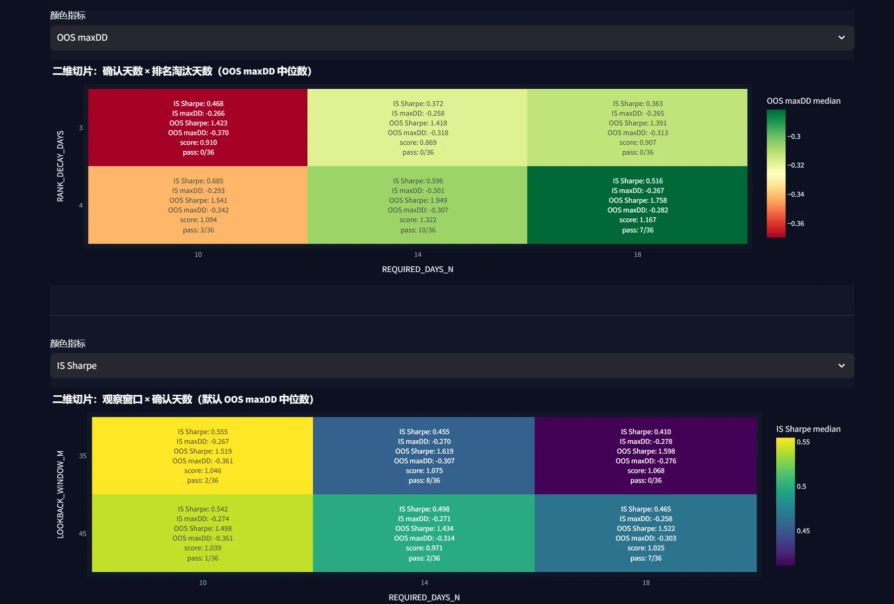
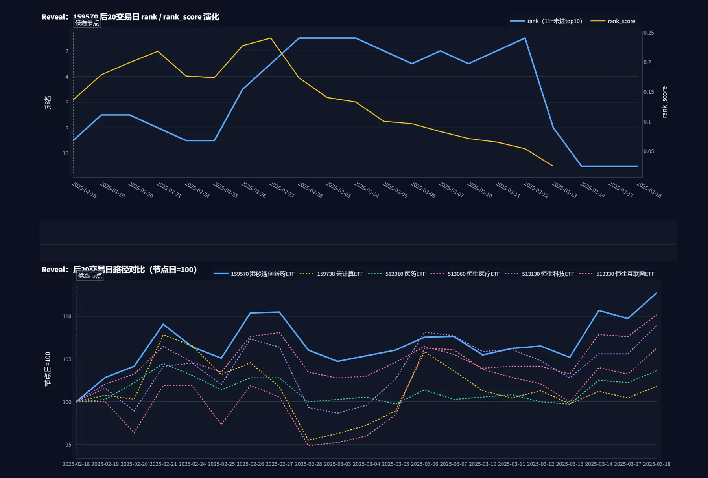
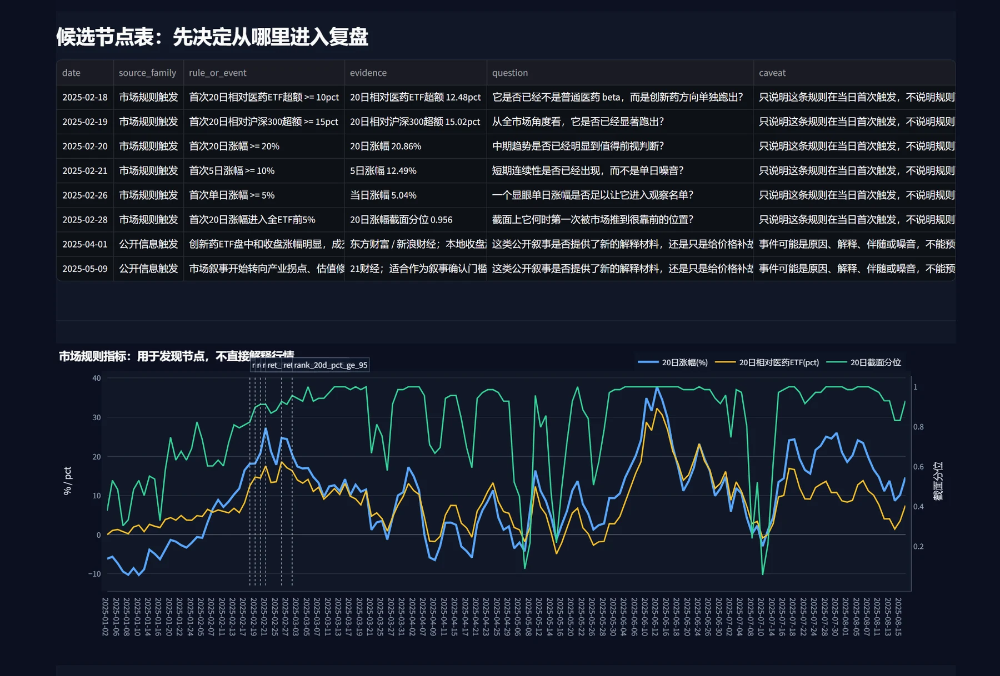
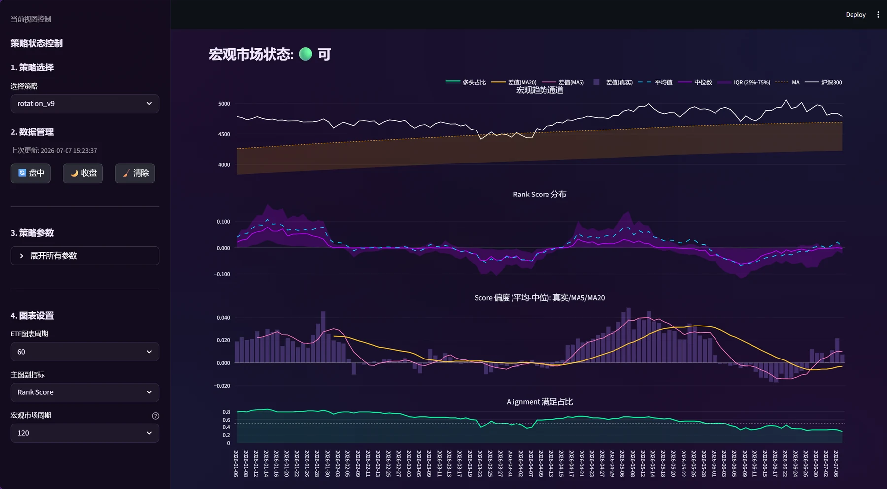
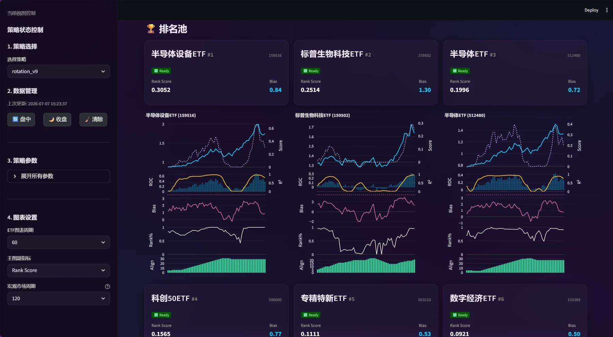
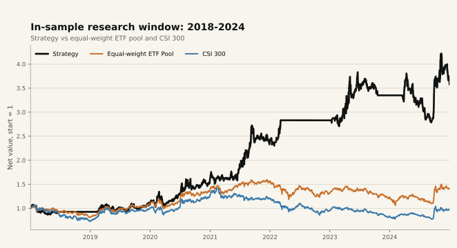
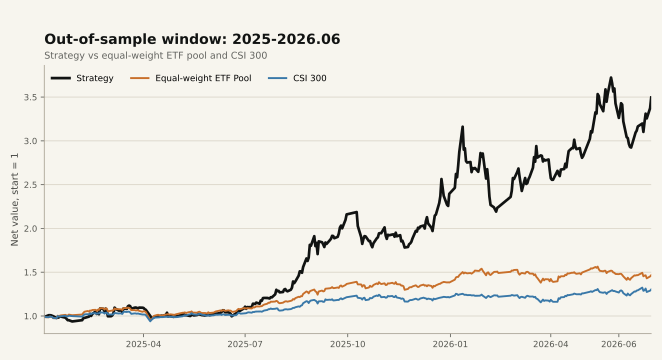
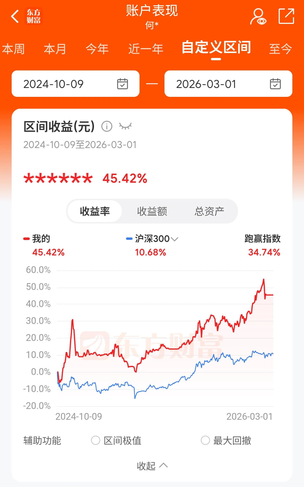
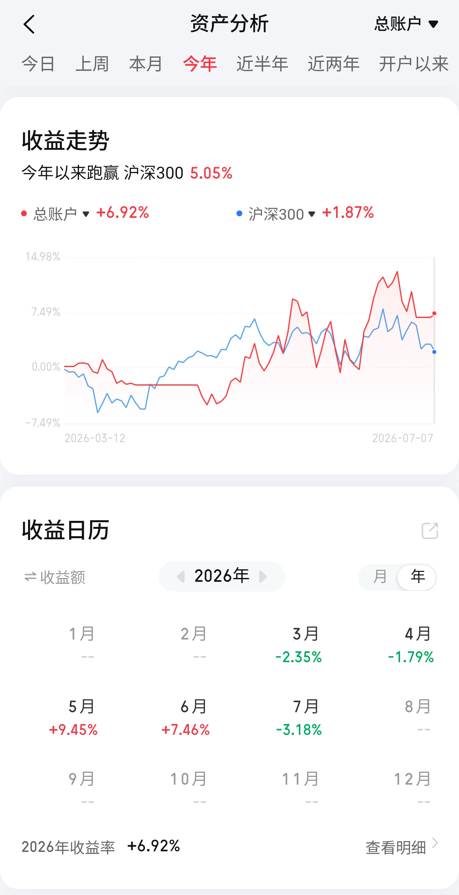

✦ AI-Native 协作
为 Agent 提供系统对应的规范指引、操作工具与接口等，从实验方案构建、回测执行，到结果解读与复盘， 接手结构化、可检查的执行和开发工作，提高策略开发迭代效率。
00 / 概览
Mentat Quant
为 Agent 提供系统对应的规范指引、操作工具与接口等，从实验方案构建、回测执行，到结果解读与复盘， 接手结构化、可检查的执行和开发工作，提高策略开发迭代效率。
结合分析工具，把研究结果拆到更具体的层面：收益归因、回撤与尾部风险、参数稳定性、过拟合风险…… 这些观察再形成下一轮假设实验、复盘或观察清单。
策略理解、失败样本、候选假设、工具缺口和后续想法，利用结构化知识库持续沉淀。 它们不是一次对话里的临时结论，而是后续复盘和 Agent 协作时可以继续读取、校准和推进的研究上下文。
在探索新指标、新模式或特殊市场窗口时，研究过程需要临时组合图表、表格、注释和数据快照。 在 Agent 的协助下生成工作台临时观察，快速构建和验证；反复有用的观察方式再沉淀成通用分析接口或固定看板。
01 / 策略研究系统架构
策略、回测与分析核心
行情处理与指标计算
本地数据与结果存储
研究看板与交互诊断
统一事实来源，支撑回测、看板与复盘。
常规行情以 GM 掘金量化 同步为主，AKShare 作为补充；标的数据与 benchmark 相关数据 统一落到本地 SQLite，供回测、比较和看板读取。
覆盖标的日线字段、成交量/成交额、复权相关信息与 benchmark 序列。
统一字段、日期和数值类型，处理缺失价格、重复日期、成交量/成交额缺口与复权因子。
标准化后的数据进入 SQLite，形成可复现的研究数据源。
策略回测、benchmark 对照、分析诊断和看板从同一数据源读取。
把规则、参数和执行解耦。
策略类负责表达规则逻辑；基类把指标计算、日级决策、展示数据和离场水平拆成可被统一调用的入口。
calculate_signals
日级交易检查run_daily_check
参数定义get_parameter_definitions
diagnostics
看板状态get_display_data
图表指标get_charting_indicators
离场价位get_exit_levels
策略逻辑通过统一接口注册，参数从 config / manifest / batch config 注入；同一个策略实现可以被 单次实验、批量扫描、review profile 和 dashboard 复用。
从研究问题到可运行实验。
manifest.json 固化策略、参数、样本区间、输出目录和 result profile；
README 保留研究问题与解释备注，status 记录执行命令和结果状态。
param_grid、common params、stop-loss variants 和 backtest periods 生成多组 run；
batch runner 并行执行、记录失败并聚合 period summary。
lean只保留 summary 和 status，用于快速筛选。standard增加 equity curve，用于常规研究。review增加日级 strategy tape，用于周期复盘。debug增加交易、持仓、排名等明细，用于深度审计。把策略意图放进日级账户环境。
core/engine.py 先调用策略信号计算，再做未来函数列名审计和可选的前视重算检查。
每日循环只把 当日及以前可见的数据 传入策略，切出当天与前一交易日视图。
策略通过 run_daily_check 返回卖出意图、买入意图和排名结果；此时还不是最终成交。
回测引擎先卖后买，更新现金、持仓、成本价、最高价，并把 SAR 等路径依赖状态从诊断结果同步回持仓表。
每个交易日落下净值、持仓、排名、订单、成交、拦截原因和策略状态，供结果产物继续加工。
把一次运行转成可比较、可审计、可复盘的证据。
summary.csv 保留收益、风险、成本、交易统计和参数列，用于单次筛选和批量比较。
equity_curve.csv 用于查看净值路径、回撤区间和关键窗口。
trade_log.csv、daily_holdings.csv、daily_rankings.csv 支持检查交易、持仓和排序变化。
manifest.json、status.json、run.log 和参数快照记录这次结果如何产生。
daily_strategy_tape.jsonl 汇总组合、订单、成交、拦截、卖出原因和排名靠前标的。
observability/agent_summary.json 提炼核心指标、风险标记、初步判断和下一步检查。
observability/review_packet.json 按日期窗口组织日级策略带、市场上下文、卖出原因和回撤窗口。
把结果拆成可继续追问的问题。
先判断一次运行的基本质量：收益、波动、Sharpe、Sortino、Calmar、胜率、盈亏比、交易次数，以及手续费和滑点成本。
不只看最大回撤，还会看水下时长、Ulcer Index、偏度、CVaR、最差交易和具体回撤窗口，判断亏损来自常规波动还是少数危险阶段。
把策略与基准、等权池和动量暴露对照，结合 Alpha / Beta、R²、p 值、信息比率和因子回归，检查收益是否能被简单市场或风格暴露解释。
通过滚动 Sharpe、滚动 Alpha / Beta、滚动相关性、滚动胜率、月度收益矩阵和回撤序列，观察策略是否只依赖某一段行情。
在批量实验里比较参数分布、分组 top runs、不同 period 的 winner 和参数均值，区分稳定区域与单点碰撞出来的结果。
02 / Agent Harness
在这个系统里，Agent 的主要工作是承担研究过程中 可结构化、可检查、可复用 的部分： 理解项目边界，整理实验配置，读取运行结果，准备分析材料，把复盘中的问题重新落回下一轮实验。
Harness 的价值不在于替代研究判断，而是把边界、证据和产物组织清楚，让 Agent 能够进入真实研究链路， 同时保留人的方向选择和解释判断。
AGENT.md 标记各层职责：执行、分析、证据构建、临时工作台 和
固定界面 分别由不同目录承载，避免一次任务在多个层级之间混写。
复盘和实验不是从收益曲线直接跳到结论，而是先定义 问题与窗口，再读取证据、做归因， 最后形成候选假设、下一轮实验或观察清单。
当一个研究问题还没有稳定到能进入固定看板时，Agent 可以先把这次讨论需要的窗口、指标、参数切片、图表和表格组织成 一个临时研究画布。它的作用是把相关材料摆在同一个界面里，先让人和 Agent 看同一组证据，再决定要补充分析、调整假设，还是沉淀成固定工具。
从一次回测、一个参数区域或一个异常窗口出发，先确定本轮要看的对象：时间范围、标的、指标、基准和对比口径。
读取批量实验、单次回测、净值曲线、持仓、交易、基准和参数结果，生成热力图、时间序列、表格和注释材料。
Agent 将材料写成可打开的画布配置：每个小节对应一个观察问题，每个材料块承载一张图、一张表或一段解释，方便继续补充和替换。
人负责判断方向和取舍，Agent 继续补图、换指标、切参数维度；反复有用的观察方式再沉淀为通用分析接口或固定看板。



有了这些基础之后，Agent 可以接手研究里结构化的推进动作：把问题变成实验方案， 把运行结果封装成证据，再和人一起把复盘疑问带回下一轮验证。
问题可以来自人的观察、已有回测、复盘记录、参数结果或市场窗口。例如某段回撤异常、某个参数组表现不稳定、某类环境下策略反应迟滞。
Agent 把问题落到策略版本、参数、样本窗口、result profile、输出目录和复现信息，确保这次实验以后还能比较和追溯。
Agent 通过统一入口运行单次或批量实验，并整理 summary、净值曲线、交易明细、持仓记录、日级策略带和复盘包。
围绕具体问题下钻回撤、交易、持仓、基准、因子或参数敏感性；需要共同查看时，Agent 将材料组织成 Workbench canvas。
人和 Agent 一起区分预期内波动、策略缺陷、执行偏差和证据缺口。成熟问题回到实验方案，稳定认知再沉淀到 workflow、观察清单或策略记录。
03 / 研究界面与复盘入口
临时研究工作台适合组织一次探索需要的证据；固定看板则面向反复出现的问题， 把批量实验筛选、单次回测下钻和策略日常观察放进稳定入口。
这里按研究推进顺序展示三个视图：先从一批回测里定位候选配置，再对单次回测做深度诊断； 策略进入观察后，再用策略状态界面连接实盘台账、当前信号和人工校准。
批量运行完成后，这个视图把不同周期、参数组合、核心指标和候选选择放在一起， 先从一批实验中定位值得继续看的候选结果。
通过汇总表查看收益、回撤、成本、滑点和风险指标，并选择候选配置进入单次回测诊断。
选择参数与评价指标，用箱线图和筛选条件观察不同参数取值下的表现分布。
按参数对所有结果分组，并查看每组表现靠前策略的净值曲线，避免只看单个最终排名。
当某个配置进入候选后，深度诊断把一条汇总结果拆成净值、交易、持仓、滚动指标和风险窗口， 用来判断它是否值得继续研究。
把策略净值、基准对照和月度收益矩阵放在同一视图里，先看收益路径是否有明显异常窗口。
滚动 Sharpe、Alpha、相关性、胜率和 Beta 用于观察表现是否只依赖某一段市场窗口。
交易日志和每日持仓记录保留进出场、成本、滑点、离场原因和持仓演化，支撑后续复盘。
策略进入观察后，这个视图把宏观状态、排名池、候选标的图表和数据刷新入口放在一起， 服务日常检查与人工校准，而不是自动执行。
通过宏观趋势通道、Rank Score 分布、Score 偏度和 Alignment 观察当前市场是否支持策略暴露。
候选 ETF 以 Rank Score、Bias、Ready 状态和多指标图表呈现，便于人工检查信号质量。
侧栏集中管理数据刷新、策略参数和图表窗口，让日常观察不需要在脚本和结果文件之间切换。


04 / 策略成果
这部分研究采用规则型量化思路：从行业轮动和趋势延续的市场观察出发，把交易判断拆成可以执行、记录和复盘的规则。 策略中的窗口、阈值、确认天数、退出与防守条件都被参数化，再通过批量实验观察不同设置下的收益路径、回撤暴露和样本外延续性。
研究过程中更关注参数区域是否具有一致性：相邻设置下结果是否接近，收益是否依赖少数行情， 回撤是否集中在特定市场状态，样本外是否快速失效。这样的框架让“调参”变成可检查的实验过程， 也让我能持续把新的市场观察转化为下一轮规则迭代。
市场资金和趋势并不会均匀分布在所有行业中，部分方向会在特定阶段形成相对优势；这种优势可能延续，也可能衰减、切换或失效。
对通过长期趋势过滤的 ETF 做相对强弱比较，并通过一套综合评分体系筛选候选方向，降低单纯追逐短期涨幅带来的噪声。
候选标的不直接按排名买入，还会结合多头均线结构与超买风险控制，过滤趋势尚未形成或短期过热的信号。
退出逻辑关注趋势衰竭、排名连续滑落和动态止损；止损包含成本兜底、阶梯止盈和 SAR 防守等机制。
策略评估拆分为样本内和样本外两段：2018-2024 作为样本内窗口， 用于策略研究、参数稳定性和风险特征观察；2025-2026.06 作为样本外窗口， 用于检验这些选择在未参与筛选数据上的延续性。两段都同时观察收益、回撤和相对基准。
覆盖 2018-2024 的多轮市场状态，重点观察收益路径、回撤深度、参数邻域稳定性和相对基准表现。
2025-2026.06 不参与该轮参数筛选，用于观察策略在后续市场中的表现；该阶段整体偏顺风，结论仍需要更长周期验证。
策略收益弹性较强，但最大回撤仍偏高，后续重点放在回撤控制、震荡期防守和实盘记录标准化。
以下为当前策略原型的回测与样本外观察结果，所选配置来自参数稳定性分析中表现较均衡的区域。 统计已包含交易成本、滑点和 T+1 约束， 并与同池等权 ETF 组合及沪深300对照。
2025-2026.06 的样本外窗口处在较友好的市场阶段，年化收益不能简单外推；这组结果更适合作为持续跟踪起点， 尤其需要继续观察回撤和风格切换期表现。
回撤控制还不够理想：样本内最大回撤约 -27%，样本外窗口也出现约 -31% 的回撤。 后续优化会重点看防守触发、仓位管理、震荡期过滤和更长时间的样本外跟踪。


从 2024 年 10 月开始入场股市；2025 年 6 月因兴趣开始探索量化， 后以约 20 万元资金规模进行实盘对比验证，目前仍在跟踪中。记录分为东方财富和华泰证券两个账户窗口（中途更换）。


{kind=link}
{kind=link}
{kind=link}
{kind=link}
{kind=link}
{kind=link}
{kind=link}
{kind=link}
{kind=link}
{kind=link}
{kind=link}
{kind=link}
{kind=link}
{kind=link}
{kind=link}